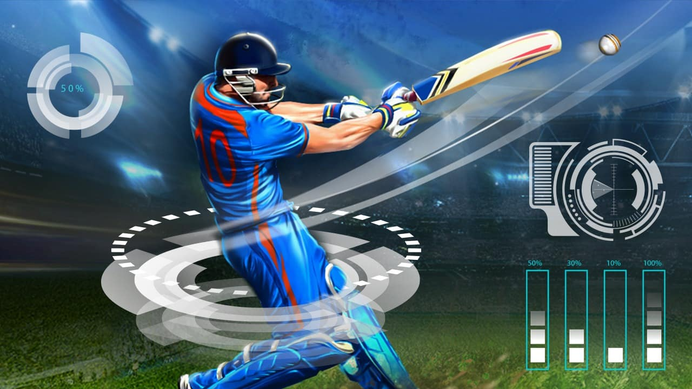

Visualization created using dataset to perform various data analysis that contains information about various metrics and KPIs such as Sales and Revenue, Customer behaviour and Marketing performance.
Performed various data analysis tasks like data aggregation, data filtering, data sorting and data joining to extract insights from the data focused on answering business queries.
Data cleaning by removing diplicates and identifying invalid data along with analysis, transformation. filtering, aggregation and joining tasks to extract insights related to famous paintings, popular museums and popular artist from the data.
Comprehensive data visualizations, charts and tables were used to analyze various aspects of road accidents and insights derived is valuable for aiming to enhance road safety and develop interventions to reduce accidents.

Data transformation, data aggregation and data filtering process was performed with the dataset to make it more usable for analysis and extraction of insights in Postgresql.
Data manipulation and cleaning steps(filtering, joining, grouping, sorting) enabled the extraction of meaningful insights from the dataset, such as the number of olympic games held,top performing athletes and countires.